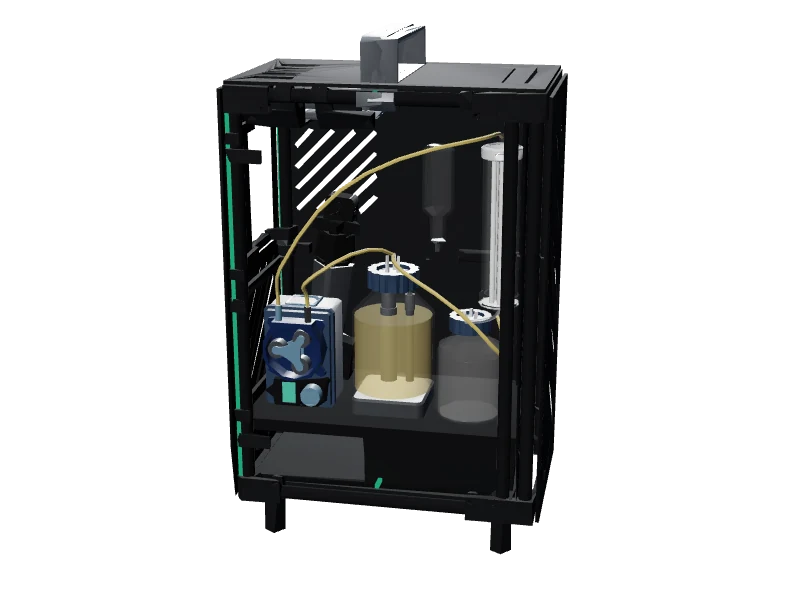
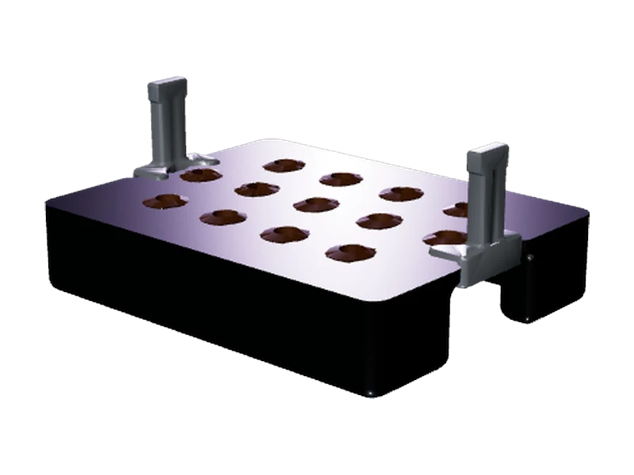

Four instruments and how they fit
Choose an instrument.
Point at a model for details
How they fit: DiOPAL is built to find the light conditions for the culture. In the bioreactor a pump moves the culture from its stirred vessel past the photometer, through the membrane filter and back; the membrane is designed to let the protectant out and keep the bacteria in. The protectant is for the plants on the hydroponics plate.

LED array · Upstream
DiOPAL
24 cultures under light at once
Six defined light conditions, four replicates each, all exposed at the same time.
24 LEDs520 nm green660 nm red
On the pageMaterials · Iterations · LED matching · Electronics · STL downloads
Take it apart→

Perfusion bioreactor · Production
Bioreactor
300 mL working culture volume
Grows bacteria to make the protectant. Designed to let it out, not them.
Engineered B. subtilisDesigned for field use
On the pageArchitecture · Materials · Iterations · Results
Take it apart→

In-line OD600 · In its loop
Photometer
0.2 mm light path through the flowing culture
Reads OD600 as the culture flows, without ever removing a sample.
336 h simplified loop15 components
On the pageParts · Materials · Methods · Results · STL downloads
Take it apart→

Growth plate · Downstream
Hydroponics
13 identical seed positions
Two sealed side rails, designed to float it.
28.7 cm³ sealed air117.5 mm plate
On the pageDesign–build–test · Final design · Reproduction
Take it apart→
- Culture loop
- Between instruments
Every bit of progress, written down as it happened
Every decision, every design change and every test that shaped the final hardware — written the week it happened, not reconstructed afterwards. All four instruments are in it.
Our first plan was a sealed growth chamber with hydroponics inside it. Arabidopsis needs steady humidity, temperature and light to give comparable…
WEEK 05 · Humidity box Visiting Prof. VersluesWe had a chamber design nobody had agreed to and a purchasing freeze. None of us had seen a working plant growth setup, so we went to look at one…
WEEK 06 · Pre-pivot Told to drop soil sensingOur original plan was to sense drought stress in soil and release protectant into the soil directly. Before committing to it we wanted someone who…
WEEK 07 · Bioreactor The pivot, and asking Dr. Pak where to startThis is the week the project changed shape. The pivot document went up on 15 April: instead of sensing soil and releasing into it, engineered B.…
WEEK 08 · Pre-pivot Working out what a stress assay should measureThe pivot had landed but the plant side of the project had no experiment behind it. Before building anything for the plants we needed to agree what…
WEEK 09 · Pre-pivot Nothing much happenedA quiet week. Several of us were away and nothing moved on the hardware. Kept in the record because a notebook containing only the productive weeks…
WEEK 10 · Pre-pivot Four instruments, three peopleThe instructors asked for a milestone and a deadline against every task in the project. Writing the list turned out to be more useful than the list…
WEEK 11 · Pre-pivot Dropping the fluorometerThe chlorophyll fluorometer would have let us measure plant stress directly, by reading damage to photosystem II. Fv/Fm is the standard number for…
WEEK 12 · Humidity box Humidity box finished, agar photos uselessThe humidity box is a small sealed enclosure that keeps humidity steady while Arabidopsis germinates. It came out of the Verslues visit and it is the…
WEEK 13 · Imaging station Building the agar plate imaging stationThe imaging station is a rig that holds a phone in a fixed position over an agar plate, under fixed lighting, so photos taken days apart can be…
WEEK 13 · DiOPAL Assembly guide tested by handing it overThe light plate, later called DiOPAL, shines green and red light into wells of bacteria. Green switches the CcaS-CcaR circuit on and red switches it…
WEEK 14 · Bioreactor Bioreactor prototype I builtThe bioreactor is the vessel the pivot committed us to. Bacteria live inside a hollow fibre membrane while the protectant they make crosses the…
WEEK 15 · Bioreactor The cells barely grow in the reactorThis is the first run of prototype I. We grew the same culture in the reactor and in a flask at the same time, both at room temperature, so the flask…
WEEK 15 · Bioreactor Prototype II reaches plateau in two hoursPrototype I barely grew and we had four candidate reasons. Prototype II changes three of them at once, which is not how you isolate a cause, but we…
WEEK 16 · Bioreactor Prof. Chang finds the gap in the designProf. Chang is a chair professor in chemical engineering at NCKU who has published on B. subtilis bioreactor systems, so he was the right person to…
WEEK 16 · DiOPAL Wrong unit for the light doseThe CcaS-CcaR circuit responds to a specific photon flux, so the light dose the plate delivers has to be a known quantity. This week we found we had…
WEEK 16 · DiOPAL Temperature sensor driving the green channelThe whole project is one sentence: sense stress, emit light, release protectant. This is the first time the sensing end and the light end ran…
WEEK 17 · Floating plate Making the plate floatArabidopsis grows hydroponically on a plate sitting over liquid medium. The roots have to reach the liquid without the plate flooding, and our first…
WEEK 18 · Photometer Iteration 1. Bubbles and driftThe photometer measures how much B. subtilis is in the reactor loop without taking samples out. An amber LED shines through a thin flow cuvette and…
WEEK 18 · Photometer Iteration 2. Zeroed against the wrong thingIteration 1 drifted and bubbled. Iteration 2 moves the cuvette to the base, turns the whole assembly upright and tightens every mount. This is the…
WEEK 18 · Bioreactor Rewriting the spec, and pulling a claimBioreactor parts had been discussed across four Discord channels and several documents, and the numbers had drifted apart from each other. This week…
WEEK 19 · Photometer Iteration 3. Response does not doubleIteration 2 was zeroed against the wrong reference, so its numbers meant nothing. Iteration 3 fixes the procedure, tilts the stand so bubbles clear,…
WEEK 19 · Bioreactor Transmembrane pressure on a screenA hollow fibre membrane fouls as it runs, and fouling shows up as pressure building across the membrane. Until this week we had no way of seeing that…
WEEK 20 · DiOPAL DiOPAL V3 finishedPrototype 1 of the light plate lit one row back on 1 June. Milestone 2 asked for tunable intensity in both colours across the whole array. This is…
WEEK 20 · DiOPAL Measuring every LED before wiringThe intensity tiers on the light plate only mean something if the LEDs inside a tier actually match each other. Before wiring V3 we measured every…
WEEK 20 · Photometer Reading four times high on the reactorIteration 4 is the final photometer build, with the component positions fixed, TPU-lined mounts so the glass is not scratched, and snap-in covers…
WEEK 21 · Photometer Starting the nineteen-day runWe had checked the photometer against a benchtop reading once, with someone watching. What we did not know was whether it holds up over days on its…
WEEK 22 · Photometer The photometer catches the pump failingThe run had been going since 21 July and the curve was not the shape any of us expected. We spent most of the week arguing about why, then on 1…
WEEK 23 · Bioreactor Decision matrix [Pinch valve actuator]Prof. Chang told us in June we had no way to push protectant out of the membrane, so we built a stepper pinch valve. This week we replaced it, on…
WEEK 23 · Bioreactor Assembling the full rigThe valve, the sensors and the photometer had all been built separately. This is the week the whole thing went together as one machine.
WEEK 24 · Bioreactor Where the bioreactor stands on 13 AugustThis is the last week the notebook covers, not the last week of work. The bioreactor is part way through a rebuild and three problems are open, all…
21 weeks, every one written up. What was decided, built and tested, across 31 entries and 62 pages.